Tawang Monastery
Tawang Monastery is one of the largest monasteries in India and is known for its stunning architecture and religious significance.
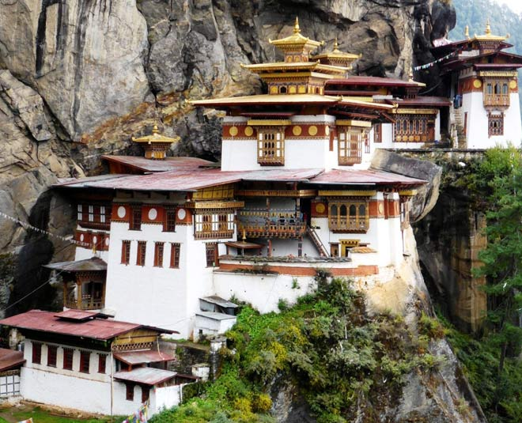 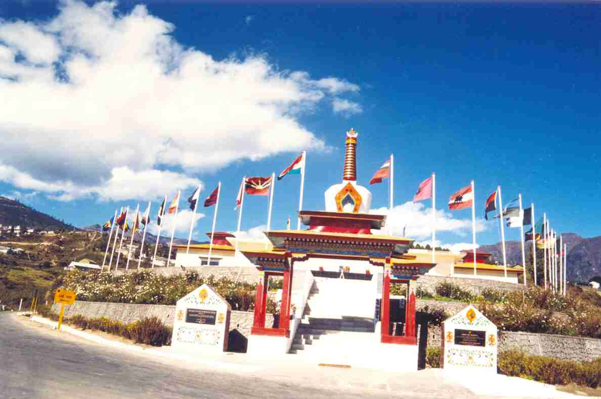
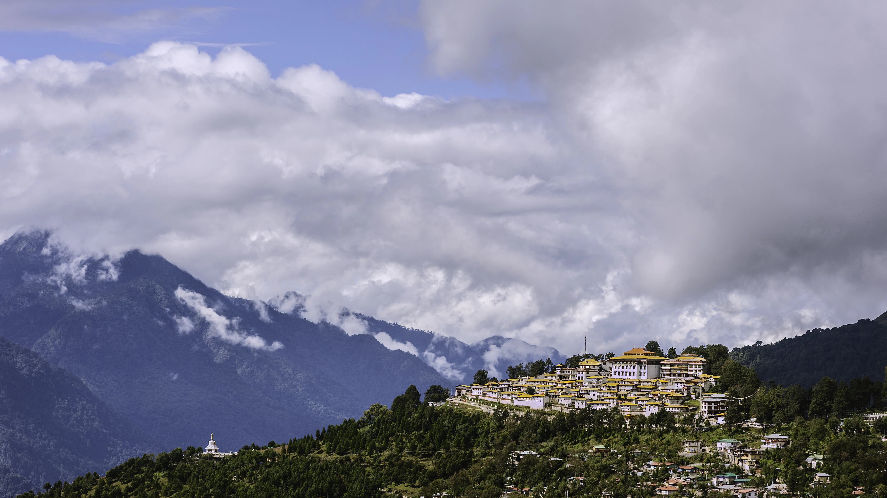
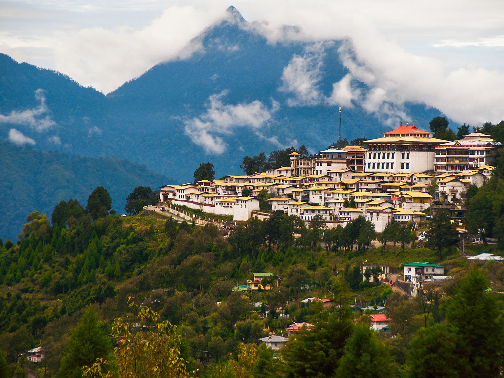
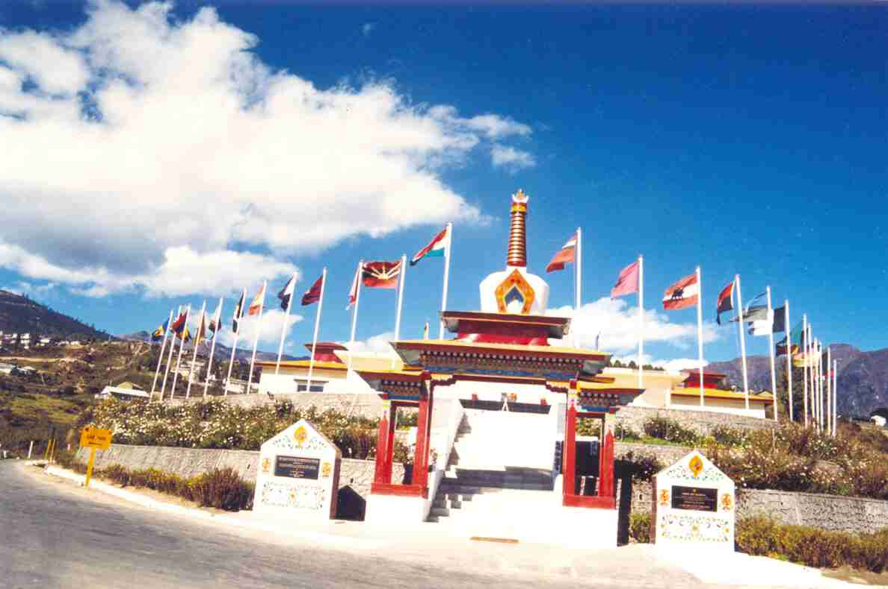
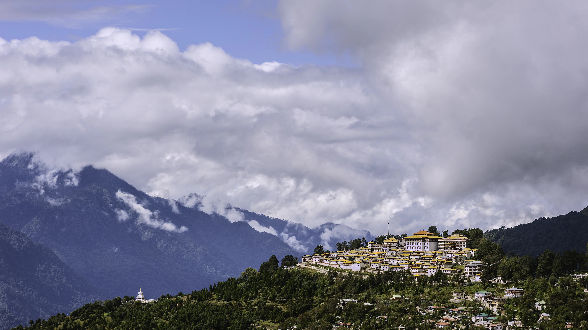
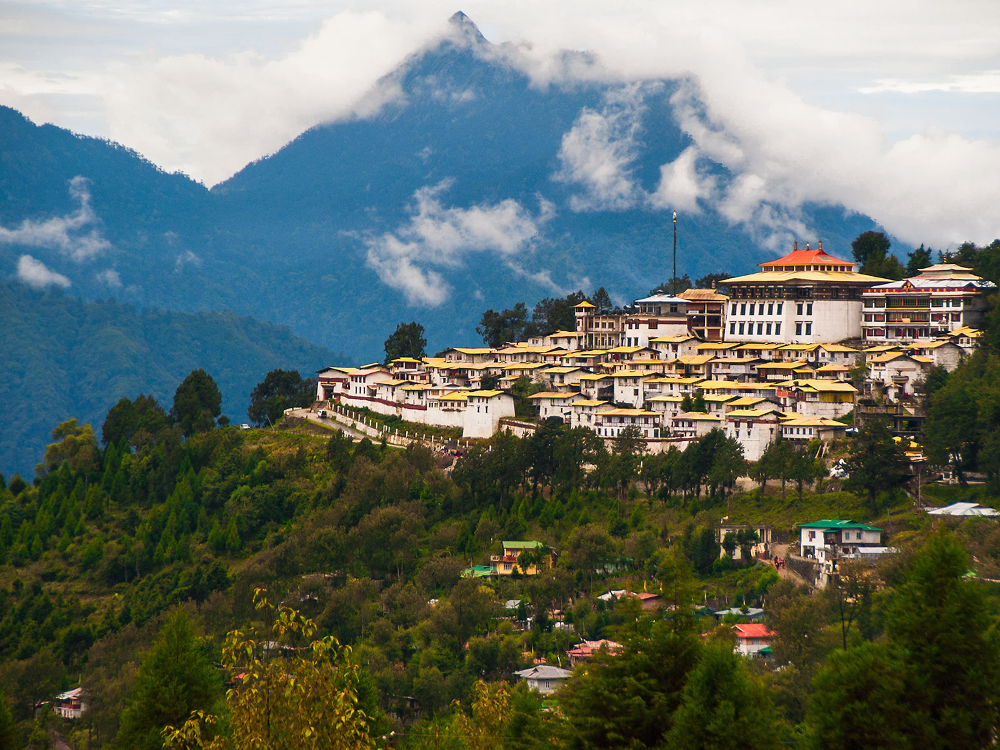
Tawang Monastery is one of the largest monasteries in India and is known for its stunning architecture and religious significance.
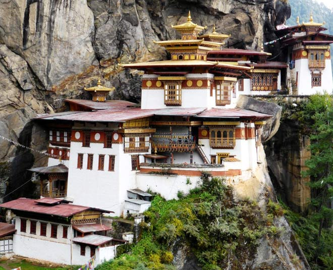
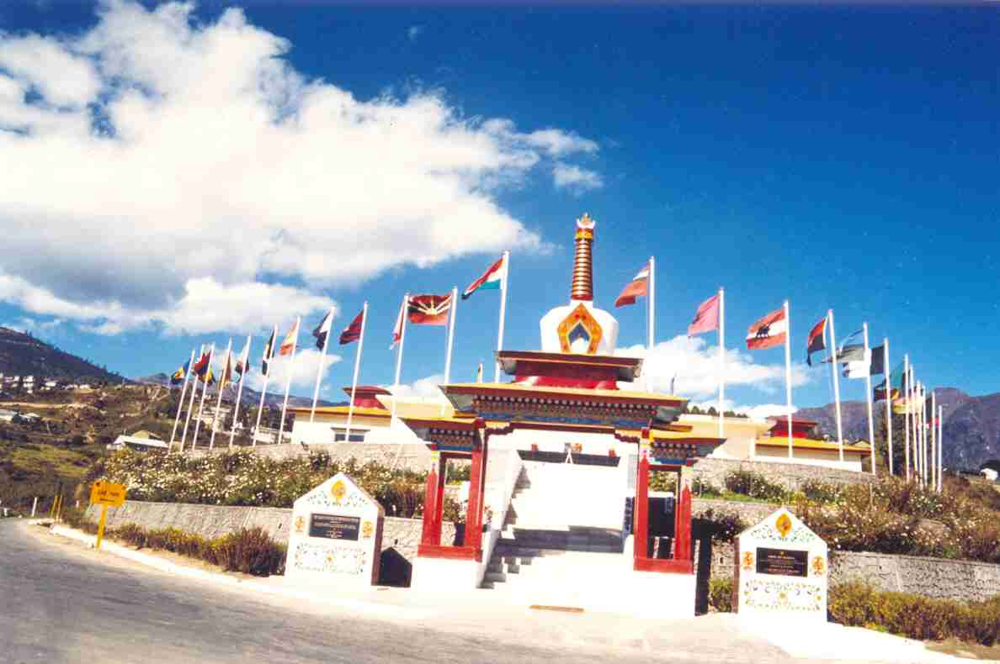
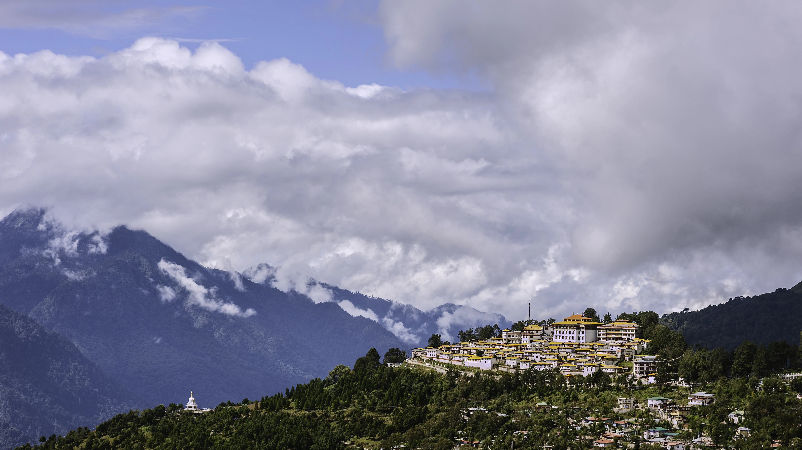
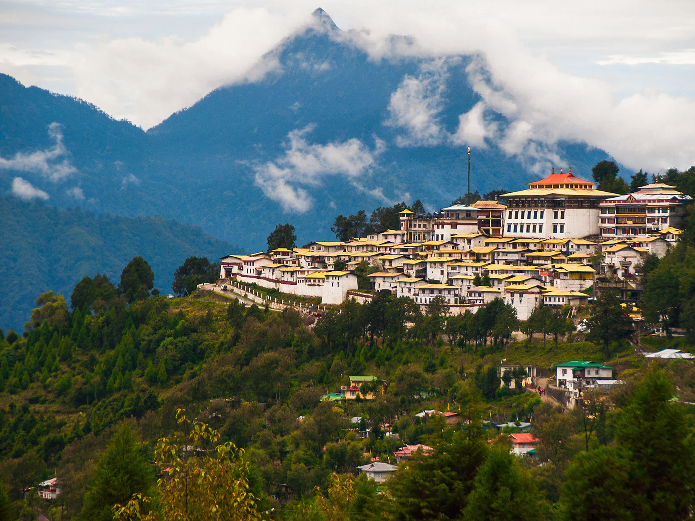
Namdapha National Park is the largest protected area in the Eastern Himalaya biodiversity hotspot and is known for its diverse flora and fauna.
 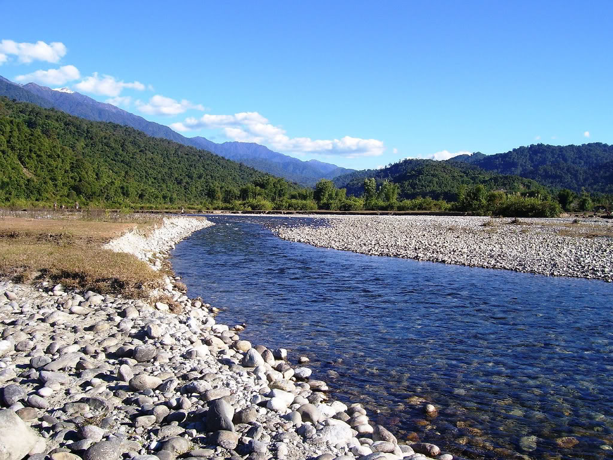
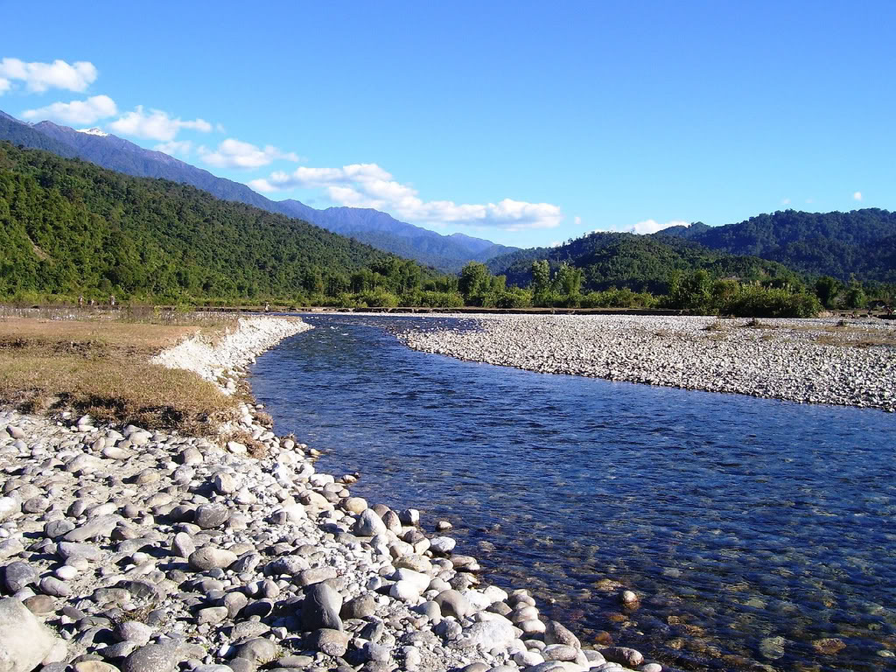


Itafort, located in the capital city of Itanagar, is an ancient fort known for its archaeological importance and historical ruins.
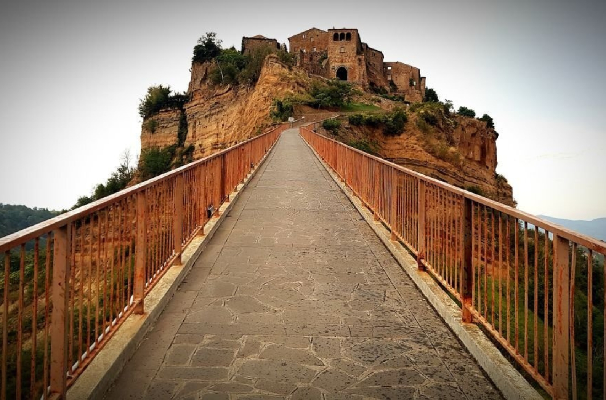 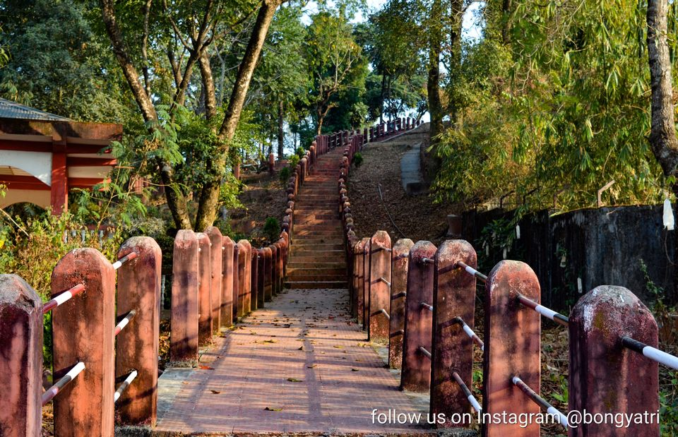Malinithan is an archaeological site and a temple dedicated to Goddess Parvati, known for its scenic beauty and cultural significance.

 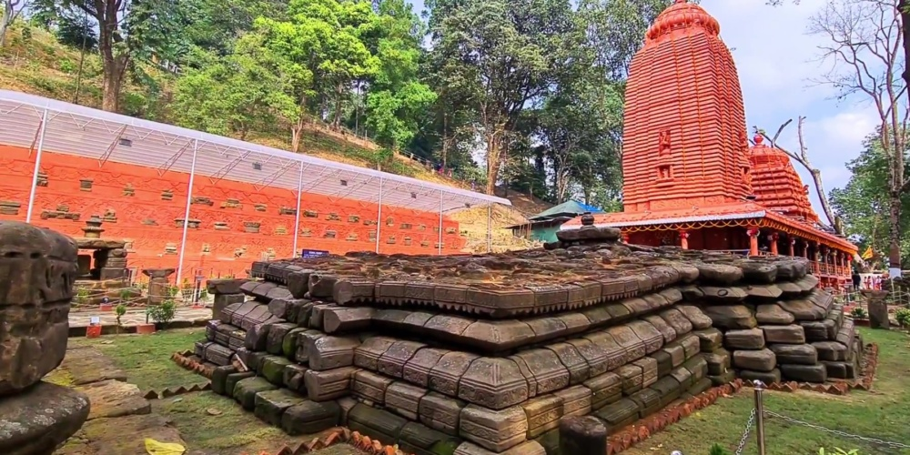
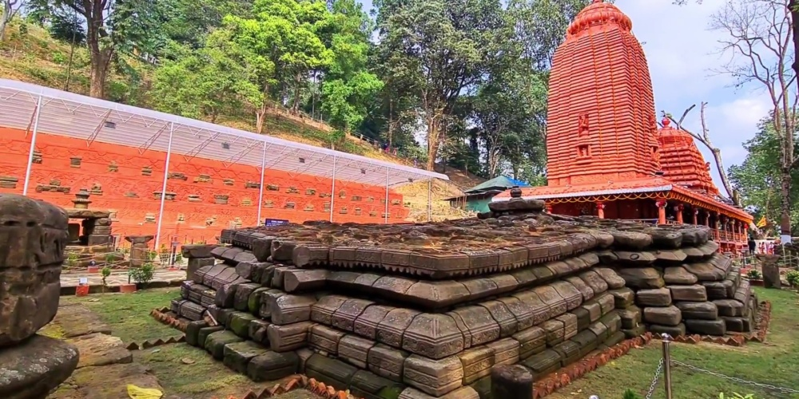